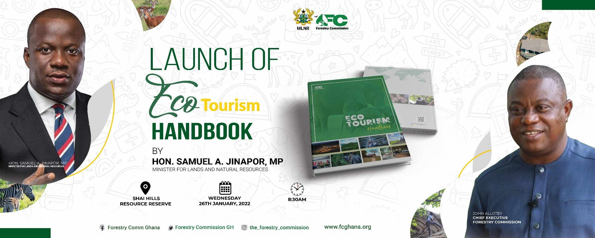
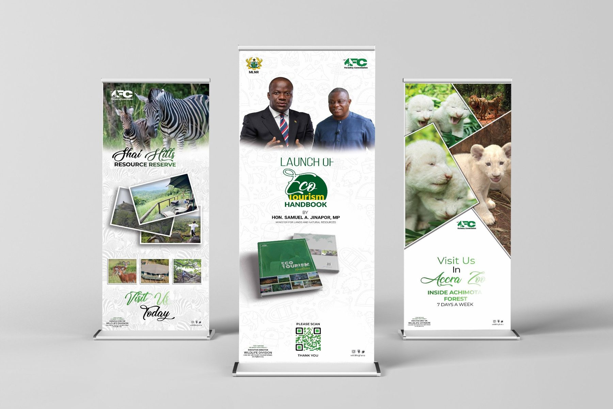
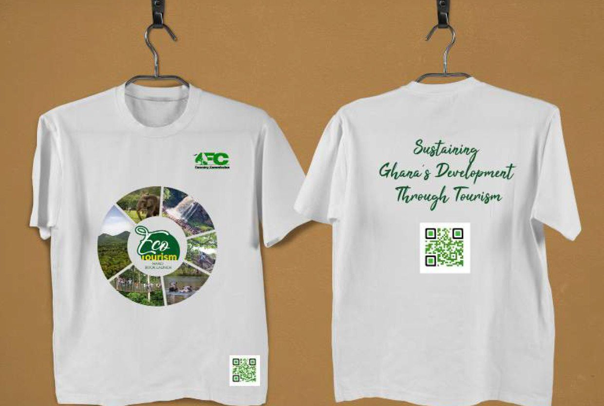
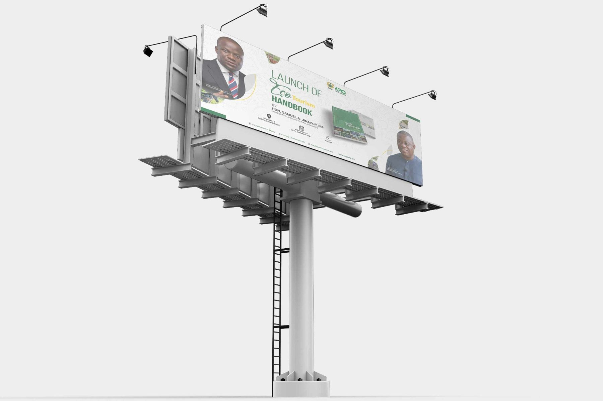
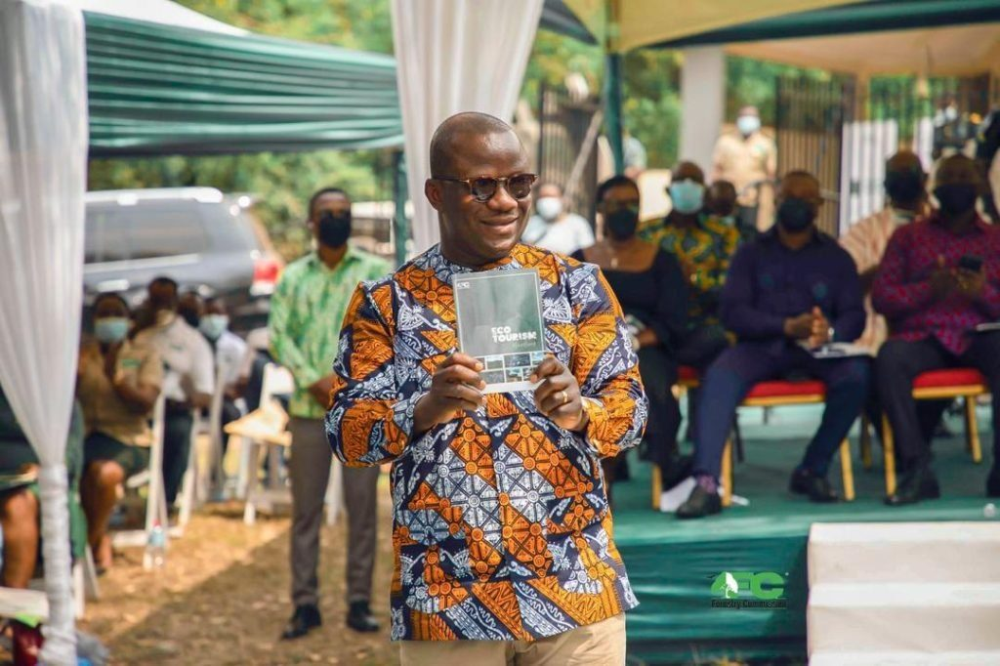
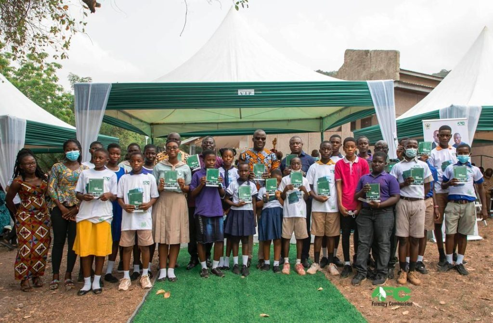
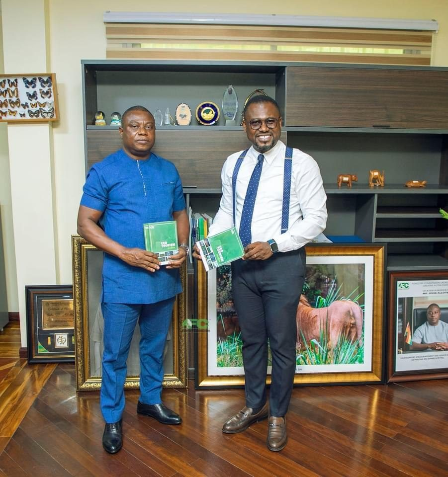

GHANA / EDITORIAL & CAMPAIGN DESIGN
One handbook.
A connected launch.
I designed the Ecotourism Handbook and its launch campaign, extending the visual identity across the publication, T-shirts, banners and display materials.

Ecotourism Handbook
Book cover presentation mockup. My contribution was the publication design, rather than authorship of the handbook content.
View full sizeTHE DESIGN ACROSS FORMATS
From the page to the launch.
The supplied artwork carries green tones, wildlife imagery and handbook visuals across the launch materials. Each format presents the same project in a different setting.

Launch banner
Campaign artwork with the handbook, launch details and event speakers.
View full size
Display banners
Roll-up banner mockups showing the launch and wildlife imagery.
View full size
Campaign T-shirt
Front and back artwork presented as a garment mockup.
View full size
Outdoor campaign presentation
Billboard mockup showing how the launch artwork appears at a larger scale.
View full sizePROJECT CONTEXT
The handbook beyond the mockups.
These supplied photographs document the handbook being presented and displayed at the launch. They provide context for the design work.

Handbook at the launch
Supplied project photograph. Photography credit is not claimed.
View full size
Launch group photograph
Supplied project photograph. Photography credit is not claimed.
View full size
Handbook presentation photograph
Supplied project photograph. Photography credit is not claimed.
View full sizeThis account was written retrospectively from my confirmed design contribution and the supplied artwork. Campaign performance, attendance figures and commercial results are not reported.
Explore more graphic design →